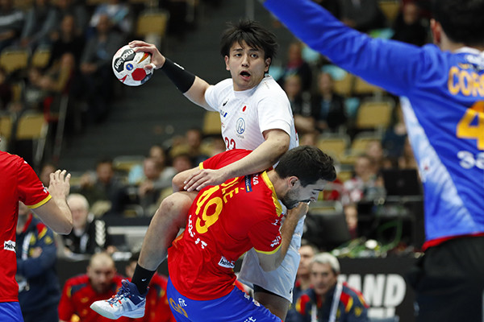
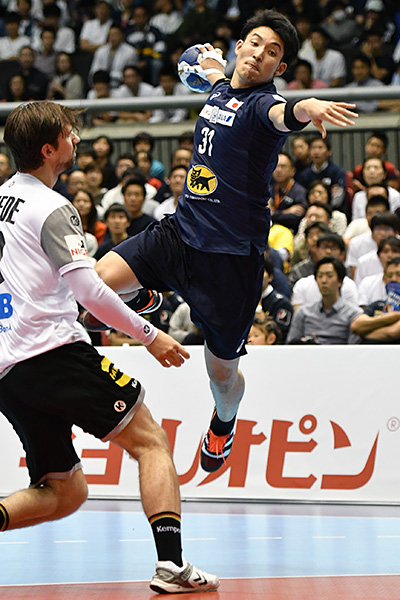
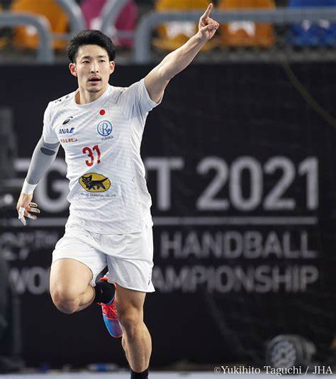
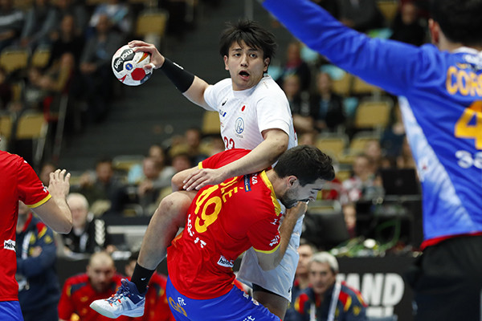
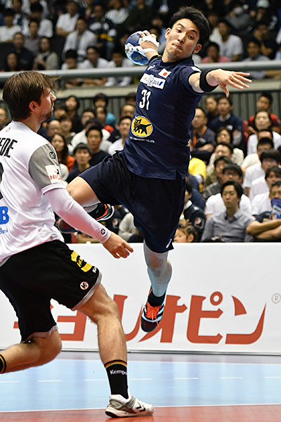
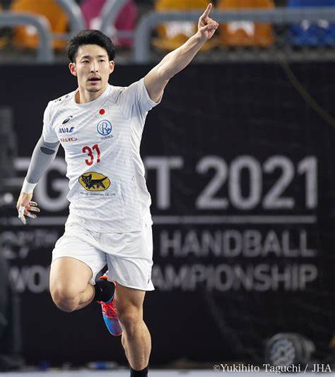

東江 雄斗
これまでにJHL最優秀選手賞、得点王など様々なタイトルを日本 リーグでは獲得。日本代表では不動の司令塔として活躍している。 抜群のシュートセンスとキレキレのフェイントが持ち味だ。 現在はジーｸﾞｽター東京でプレーしている。
吉野 樹
高い打点からのロングシュートを得意とする点取り屋。力強さに 加えて、チーム１の肩甲骨の柔らかさを持ち、様々な形で得点をとる。 現在はトヨタ車体でプレーしている。
明示大学出身。大学時代にはインカレ２位に輝く。
これまでにJHL最優秀選手賞、得点王など様々なタイトルを日本 リーグでは獲得。日本代表では不動の司令塔として活躍している。 抜群のシュートセンスとキレキレのフェイントが持ち味だ。 現在はジーｸﾞｽター東京でプレーしている。
高い打点からのロングシュートを得意とする点取り屋。力強さに 加えて、チーム１の肩甲骨の柔らかさを持ち、様々な形で得点をとる。 現在はトヨタ車体でプレーしている。
明示大学出身。大学時代にはインカレ２位に輝く。
